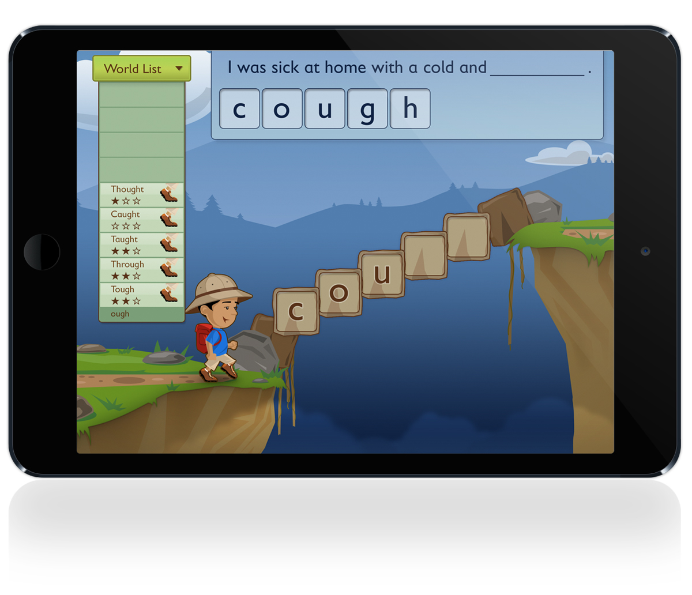
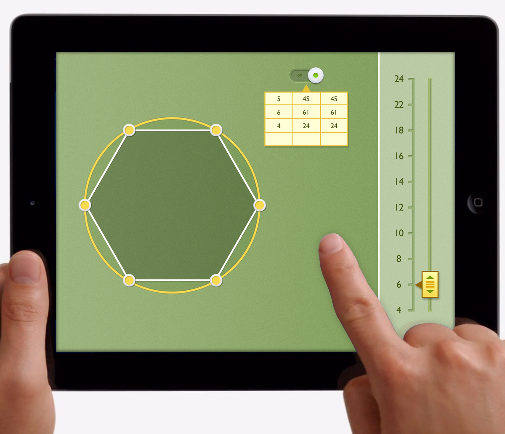
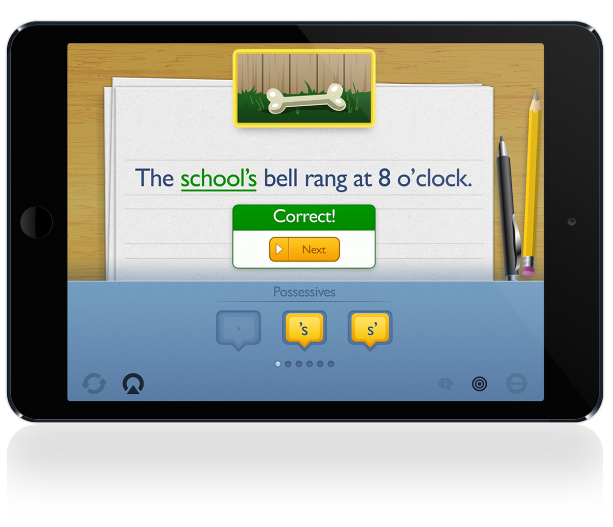

Sr. UX/UI Designer
Los Angeles, CA - 2012-14
A leading provider of electronic learning programs, test development, and scoring services provided materials for our dev team in order to extend teachers and students tablets as tools in the classroom. They publish curriculum for ages k-12 and came to Twobit Circus to bring their lesson plans to tablets. I led the visual structure for the various age groups and managed the transitions from UX design into Development.
How do you allow mistakes?
There were loads of hurdles to get over at the jump. Our client was very specific to how lessons were structured, both individually and linked throughout the school year. We had to allow students to fail at tasks without hints or help. There also needed to be an option to save work, whether right or wrong. This was considered bad practice and bad UX to most of us, so it was a lot of fun sorting through the different lessons; brought up old classroom wounds for some of us too.


